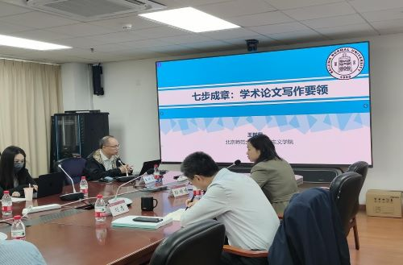
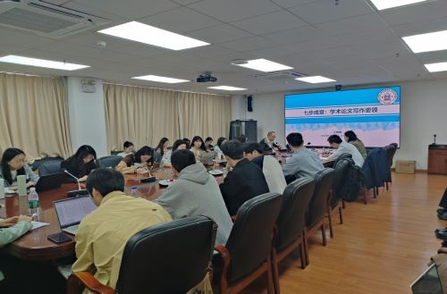
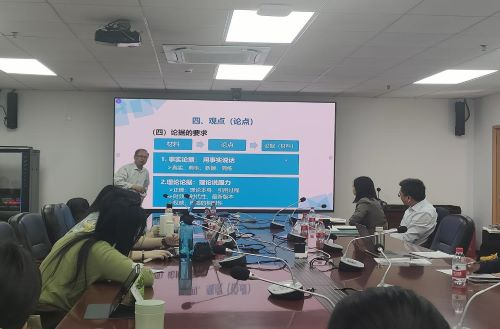

<td align="center" class="tbcolor10" colspan="2" valign="top">
<table border="0" cellpadding="0" height="100%" width="100%">
<tbody><tr><td align="right" height="35px" style="font-size:9pt">
<a href="javascript:window.close()" title="关闭本窗口">关闭窗口</a>｜<a href="print.asp?id=543629" target="_blank" title="打印本页内容">打印张贴版</a>    

</td></tr>
<tr>
<td align="center" height="500" valign="top">
<table border="0" cellpadding="4" cellspacing="0" height="100%" style="border-collapse: collapse;word-break:break-all;" width="86%">
<tbody><tr>
<td align="center" height="80px"><span style="font-family:方正小标宋简体;font-size: 25px;color: #C70E5C">马学科研究生培养质量提升工程之名家系列谈第一期《七步成章：学术论文写作要领》学术讲座成功举行</span></td>
</tr>
<tr>
<td align="center" height="50px" style="font-size: 9pt"><font color="#808080">马克思主义学院　2025/3/21 16:55:00</font><br/> 
<font color="#F8F8F8" style="font-size:9pt">（钟沛基 2022280095）</font></td>
</tr>
<tr>
<td height="300" valign="top">
<p class="MsoNormal" style="margin-bottom:6.0pt;mso-para-margin-bottom:.5gd;
text-indent:30.0pt;mso-char-indent-count:2.0;line-height:200%">2025 年 3 月 20 日上午，马克思主义学院于汇文楼 1600 会议室成功举办了马学科研究生培养质量提升工程之名家系列谈第一期——“七步成章：学术论文写作要领”学术讲座。本次讲座特邀北京师范大学学术委员会委员、教学委员会委员、京师特聘教授王树荫担任主讲人，本次讲座由马克思主义学院副院长孙婷婷副教授主持，马克思主义学院院长刘志教授出席，学院师生40余人到场聆听。</p><p class="MsoNormal" style="margin-bottom:6.0pt;mso-para-margin-bottom:.5gd;
text-indent:30.0pt;mso-char-indent-count:2.0;line-height:200%">             </p><p class="MsoNormal" style="margin-bottom:6.0pt;mso-para-margin-bottom:.5gd;
text-indent:30.0pt;mso-char-indent-count:2.0;line-height:200%">讲座中，王教授围绕学术论文写作的七个关键步骤进行了深入讲解，包括准备、选题、材料收集、观点提炼、提纲撰写、正文写作和修改完善。在准备环节，王教授强调了夯实理论基础的重要性，尤其要深入学习马克思主义理论和学科理论，为后续的论文写作筑牢根基。谈及选题，王教授指出，同学们应具备问题意识和强烈的好奇心，面对一个命题，要深入思考其正确性及背后的因果关系。同时，他提醒大家选题时切勿急躁，任何研究都需要时间沉淀和精心打磨。在材料收集与整理方面，王教授形象地比喻，要做到“薄书看厚、厚书看薄”，并强调要养成“手抄笔录”的习惯，注重材料的分类整理，提高写作效率。在观点提炼上，他倡导“论从史出”，注重对学术史的梳理，只有充分了解前人的研究成果，才能在已有基础上提出独到见解。关于提纲的搭建，王教授提醒同学们注意各级标题之间的逻辑关系，确保一级标题、二级标题和三级标题层层递进、条理清晰。在写作过程中，王教授深入讲解了写作的切入点与具体方法。他根据自己多年经验，发现许多人在撰写结论部分时存在不足，因此特别强调了结论的重要性。他指出，结论部分绝非可有可无的附属，而应是整篇论文提纲的精准总结与深度提炼。进入修改环节，王教授毫无保留地分享了自己多年积累的宝贵经验，引用
“练字不如练句，练句不如练意” 这句经典表述，告诫同学们在修改论文时，不应只着眼于字词的雕琢，更要关注语句的通顺与表意的准确，强调要从整体立意出发，审视论文是否完整、准确地表达了自己的观点。此外，王教授还特别提醒大家，拖延是论文写作的大敌，务必克服“拖延症”，制定合理的写作计划并严格执行，养成良好的写作习惯，这样才能在学术创作的道路上稳步前行。</p><p class="MsoNormal" style="margin-bottom:6.0pt;mso-para-margin-bottom:.5gd;
text-indent:30.0pt;mso-char-indent-count:2.0;line-height:200%">             </p><div><div><div><div><div><p class="MsoNormal" style="margin-bottom:6.0pt;mso-para-margin-bottom:.5gd;
text-indent:30.0pt;mso-char-indent-count:2.0;line-height:200%">讲座过程中，王教授结合自身丰富的学术研究与写作经验，穿插了大量生动案例，使抽象的写作理论变得通俗易懂，现场气氛活跃，学生们听得十分认真，纷纷表示受益匪浅。</p><p class="MsoNormal" style="margin-bottom:6.0pt;mso-para-margin-bottom:.5gd;
text-indent:30.0pt;mso-char-indent-count:2.0;line-height:200%">             </p><p class="MsoNormal" style="margin-bottom:6.0pt;mso-para-margin-bottom:.5gd;
text-indent:30.0pt;mso-char-indent-count:2.0;line-height:200%">讲座最后，孙婷婷副院长对王教授的精彩分享表示衷心感谢，并对参与讲座的研究生们提出殷切期望。她鼓励大家将讲座中学到的知识运用到实际写作中，不断提高自身的学术写作水平，努力为马克思主义学科的发展贡献更多优秀研究成果。</p><p class="MsoNormal" style="margin-bottom:6.0pt;mso-para-margin-bottom:.5gd;
text-indent:30.0pt;mso-char-indent-count:2.0;line-height:200%"></p><p class="MsoNormal" style="margin-bottom:6.0pt;mso-para-margin-bottom:.5gd;
text-indent:30.0pt;mso-char-indent-count:2.0;line-height:200%">本次学术讲座的成功举办，是马克思主义学院推进研究生培养质量提升工程的重要举措之一，不仅为学院学子搭建了宝贵的学习交流平台，也进一步激发了同学们的学术热情，为提高学院研究生培养质量注入了新的活力。</p><p align="right" class="MsoNormal" style="text-align:right;text-indent:30.0pt;
mso-char-indent-count:2.0;line-height:165%">马克思主义学院</p><p class="MsoNormal" style="margin-bottom:6.0pt;mso-para-margin-bottom:.5gd;
text-indent:30.0pt;mso-char-indent-count:2.0;line-height:200%">
</p><p align="right" class="MsoNormal" style="text-align:right;text-indent:30.0pt;
mso-char-indent-count:2.0;line-height:165%">2025年3月21日</p></div><p align="right" class="MsoNormal" style="mso-char-indent-count:2.0000;text-autospace:ideograph-numeric;mso-pagination:none;
text-align:right;line-height:200%;"><br/></p></div></div></div></div></td>
</tr>
<tr><td height="0" style="font-size: 9pt"></td></tr>
<tr><td align="right" style="font-size: 9pt">撰稿：张建婷　审核：邓佳璐孙婷婷  <br/>（更新于2025/3/21 18:59:00）<br/> </td></tr>
</tbody></table>
</td>
</tr>
</tbody></table>
</td>
